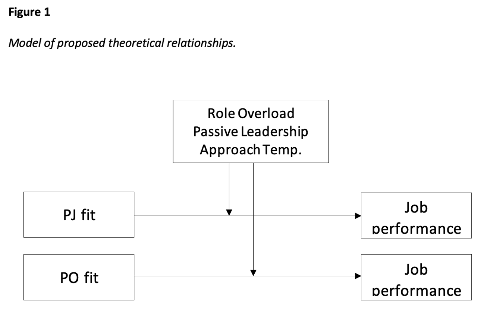

In this study proposal, I discuss some of the key moderators of person-environment fit in organizations. Taking a needs-supplies fit perspective, I argue that the literature has overlooked the moderating effects of role overload, passive leadership, and approach-avoidance temperament on person-job and person-organization fit.
Talent management involves the deliberate effort by an organization to manage the supply, demand, and flow of talent (Lewis & Heckman, 2006). When placing talent in an organization there are many considerations, one of the most important being person-environment fit. Person-environment (PE) fit, defined as the compatibility between an individual and their work environment, is vital to performance in the organization (Kristof-Brown et al., 2005). In fact, PE fit has been referred to as, “so pervasive as to be one of, if not the dominant conceptual forces in the field” (Schneider, 2001, p. 142).
There are multiple types of PE fit. Some of the core constructs being person-vocation, person-group, and person-supervisor fit (Kristof-Brown et al., 2005). In this paper we will be specifically focusing on person-job (PJ) and person-organization fit. Both PJ and PO fit are important aspects the employment relationship, as good PJ and PO fit have been linked to positive work outcomes such as job performance, retention, and job satisfaction (Caldwell & O’Reilly, 1990; Resick et al., 2007). Additionally, poor PJ and PO fit result in negative work outcomes. However, there is a lack of understanding as to personal and situational characteristics that moderate fit-outcome relationships (Kristof-Brown et al., 2005). It is imperative to address this research gap in order to fully understand how to best facilitate employee job and organizational fit within a talent management system.
This paper will cover the existing literature on the topic and identify potential moderators of these relationships. Next, we will discuss the current gap between practice and research while identifying any strategic ways to approach PJ and PO fit for organizations. Finally, a proposal will be outlined to research the proposed moderators of these relationships in a study population.
PJ and PO fit are closely related subsets of PE fit. PJ fit is the compatibility between a person’s characteristics and those of the job or tasks required to complete the job (Kristof-Brown et al., 2005). There exist two theoretical conceptualizations of PJ fit. First, PJ fit may be conceptualized as an employee’s knowledge, skills, and abilities being commensurate with what is required to complete the job. This is known as demands-abilities fit. Second, PJ fit may be conceptualized within a needs-supplies framework. This is the amount that an employee’s needs, desires, or preferences are met by the jobs they need to perform.
PO fit, simply put, is the compatibility between people and the entire organization (Kristof-Brown et al., 2005). At least one of these entities provides what the other needs. This relationship can also be categorized in a demands-abilities or needs-supplies fit framework. A key component of PO fit is that an individual and the organization share similar, fundamental characteristics if there is to be sufficient fit (Resick et al., 2007). For example, individuals will be most successful in organizations that share their personalities (Kristof-Brown et al., 2005).
There is a litany of outcomes of fit in jobs and organizations, both positive and negative. Positive PJ fit outcomes include increased job performance, increased job satisfaction, and job retention (Caldwell & O’Reilly, 1990; Kristof-Brown et al., 2005). Positive PO fit outcomes are increased job performance, increased job satisfaction, organizational retention, and organizational commitment (Kristof-Brown et al., 2005; Resick et al., 2007). Negative PJ fit outcomes include an increased intent to quit and psychological strain (Kristof-Brown et al., 2005). Finally, negative PO fit outcomes include poor coworker satisfaction and poor trust in managers (Kristof-Brown et al., 2005). Outcomes between the two types of fit overlap a great deal. There are a variety of important outcomes, however research lacks on personal and situational characteristics that moderate these fit-outcome relationships.
There exists insufficient research on fit-outcome moderators. Current research suggests that fit is most influential if the dimensions measured are important to the individual (Edwards, 1996). The limited research that exists has been split into two camps, personal and situational moderators. The personal characteristics that have been analyzed are self-esteem and various personality traits. The situational characteristics have been researched even less with the only two being relationships with managers and coworkers, and job performance (Kristof-Brown et al., 2005). Situational moderators are particularly important to practice because many managers face the challenge of minimizing the effects of poor fit for their employees. With such limited research on fit-outcome moderators there is an imperative to further understand what characteristics influence this relationship.
In order to identify and hypothesize additional moderators of the PJ/PO fit-outcome relationship I will be taking a needs-supplies fit perspective. I will also be assessing job performance as the outcome of the fit-outcome relationship as job performance is an important goal of talent management. The three moderators I will be assessing will be role overload, passive leadership, and approach-avoidance temperament. These variables were chosen as key moderators of the fit-outcome relationship because they are important situational and personal moderators and are theoretically likely to influence the relationship.
Role overload, a situational characteristic, exists when people believe that the demands placed on them cannot be fulfilled in the available time or that they lack the skills for satisfactory task performance (Barling & Frone, 2017). The inability to fulfil work demands goes against employee desires in the needs-supplies model. By actively overwhelming an employee’s role, the supplies they gain from their job or organization are rapidly diminished. Additionally, this moderating effect is likely to be more impactful for PJ fit than PO fit. Role overload is a job-centric construct and is less likely to influence the PO fit to job performance relationship (Barling & Frone, 2017). For these reasons, the following are hypothesized:
H1: Role overload moderates the relationship between PJ/PO fit and job performance, such that the positive relationship is weaker for individuals high in role overload.
H2: Role overload moderation will be more influential on PJ fit to job performance relationship.
Passive leadership, another situational characteristic, is defined as leaders failing to initiate structure in the workplace or define tasks for their subordinates. Additionally, this leadership style is generally ineffective because when problems do not exist or are not directly apparent to the leader, they do not engage with their employees (Kelloway et al., 2005). The reduced support from a leader will detract from an employee’s needs. A reduction in an employee’s needs being met will reduce the positive relationship between fit and job performance due to less needs-supplies fit. Additionally, this moderating effect should be more impactful for PO fit than PJ fit. Leaders have more of an influence on how employees interact with an organization than their job in particular. Thus, the following are hypothesized:
H3: Passive leadership moderates the relationship between PJ/PO fit and job performance, such that the positive relationship is weaker for individuals high in passive leadership.
H4: Passive leadership moderation will be more influential on PO fit to job performance relationship.
Approach-avoidance temperament, a personality characteristic, is a behavioral trait as to how individuals are motivated by events. Approach behavior is instigated or directed by a positive or desirable event while avoidance behavior is instigated or directed by a negative or undesirable event (Elliot & Thrash, 2002). Focusing on approach temperament, the positive event from sufficient PJ/PO fit will further motivate employees to increase their fit in their job or organization and subsequently positively influence job performance. Theoretically, this moderating characteristic should be more impactful for PJ than PO fit. This is because an individual who is motivated can have more of an impact on their job since it is directly accessible to them. For these reasons, the following are hypothesized:
H5: Approach temperament moderates the relationship between PJ/PO fit and job performance, such that the positive relationship is stronger for individuals high in approach temperament.
H6: Approach temperament moderation will be more influential on PJ fit to job performance relationship.
There certainly exists a palpable gap between research and practice on the topic of fit-outcome moderators. On the research side, there has only been minimal research on fit-outcome moderators. Additionally, the identified moderators follow theory and are not aimed at solving real-world issues (Kristof-Brown et al., 2005). While the situational moderators researched suggest that change is possible to increase fit-outcome results, the same is not said about personal moderators. The research suggests that there is little an organization can do to mitigate negative influence on fit outcomes when the moderating characteristic is a personal trait.
Meanwhile, on the practice side, there is a much more active approach to addressing fit-outcome relationships and moderators. First, according to Collings & Mallahi’s (2009) review of strategic talent management, talent management facilitates the filling of key positions within the organization with competent employees and ensures their continued success in organizations. This suggests that talent management is constantly addressing these moderators of fit-outcome relationships. In this case, practice may have additional insight into the relationship that academics have yet to address. Second, as noted in Michaels and colleagues’ (2001) War For Talent, talent management professionals should manage “C players” out of organizations. This is an issue because there may be unaddressed situational moderators that are influencing the job performance of employees. This is a key reason I chose to study role overload and passive leadership as they are characteristics often out of the control of employees.
To close the research to practice gap on this issue I propose two steps. First, practice must inform research as to talent management successes for managing moderators, both positive and negative. For example, if an employee that fits well with an organization had stellar job performance prior to working with a passive leader this is evidence that this has a clear impact on the fit-outcome relationship. In this case practice should inform research on additional moderators to study. Second, research must inform practice as to what moderators should be addressed prior to “managing” employees out of organizations. Organizations should look to situational moderators that may be reducing job performance in an employee that initially fit well with their job and organization. There was most likely a concrete reason why this employee was hired. Perhaps now they are experiencing role overload, and this is negative affecting their needs-supplies fit with their job or organization.

My proposed study will effectively assess the previously stated hypotheses. I will partner with a consulting firm in New York City to gain access to employee data. Once the consulting firm has begun work with a large organization, I will gain permission from said organization to implement a survey assessing fit-outcome moderators. I will aim to recruit a study pool of 200 entry-level employees to ensure proper power for my statistical analyses. Figure 1 is the proposed model of my study.
All measures use a 5-point Likert scale ranging from 1 (strongly disagree) to 5 (strongly agree).
Data analysis will be conducted with PROCESS v3.4 on SPSS by Andrew Hayes using Model 3.
In summary, moderators of the PJ/PO fit-outcome relationship remain understudied in research and perhaps overlooked in practice. We must focus our research on moderators that can be actively applied to talent management to gain positive outcomes for employees and organizations. The current literature remains meager and haphazard. Perhaps the best way to direct research is to learn what has been working on the practice side. Talent management systems are constantly being implemented with success. Therefore, practice may have tentative solutions to the fit-outcome relationship. On the other hand, practice may sometimes overlook situational moderators that may be contributing to negative outcomes for employees. Instead of punishing employees that are underperforming talent management professionals should first look to the literature as to potential moderating characteristics of these relationships. I have proposed a study that I hope can identify more important moderators of the PJ/PO fit-outcome relationship. Further increasing our knowledge on what moderators influence this relationship can steer research and aid practice.
Barling, J., & Frone, M. R. (2017). If only my leader would just do something! Passive leadership undermines employee well‐being through role stressors and psychological resource depletion. Stress and Health, 33(3), 211-222.
Caldwell, D. F., & O’Reilly III, C. A. (1990). Measuring person-job fit with a profile-comparison process. Journal of applied psychology, 75(6), 648.
Collings, D. G., & Mellahi, K. (2009). Strategic talent management: A review and research agenda. Human resource management review, 19(4), 304-313. Edwards, J. R. (1996). An examination of competing versions of the person-environment fit approach to stress. Academy of management journal, 39(2), 292-339.
Elliot, A. J., & Thrash, T. M. (2002). Approach-avoidance motivation in personality: approach and avoidance temperaments and goals. Journal of personality and social psychology, 82(5), 804.
Karakitapoğlu-Aygün, Z., & Gumusluoglu, L. (2013). The bright and dark sides of leadership: Transformational vs. non-transformational leadership in a non-Western context. Leadership, 9(1), 107-133.
Kelloway, E. K., Sivanathan, N., Francis, L., & Barling, J. (2005). Poor leadership. Handbook of work stress, 89-112.
Kristof‐Brown, A. L., Zimmerman, R. D., & Johnson, E. C. (2005). Consequences of individuals’ fit at work: A meta‐analysis OF person–job, person–organization, person–group, and person–supervisor fit. Personnel psychology, 58(2), 281-342.
Michaels, E., Handfield-Jones, H., & Axelrod, B. (2001). The war for talent. Harvard Business Press.
Resick, C. J., Baltes, B. B., & Shantz, C. W. (2007). Person-organization fit and work-related attitudes and decisions: Examining interactive effects with job fit and conscientiousness. Journal of applied psychology, 92(5), 1446.
Schneider, B., Smith, D. B., & Paul, M. C. (2001). P–E fit and the attraction-selection-attrition model of organizational functioning: Introduction and overview.
Spector, P. E., & Jex, S. M. (1998). Development of four self-report measures of job stressors and strain: interpersonal conflict at work scale, organizational constraints scale, quantitative workload inventory, and physical symptoms inventory. Journal of occupational health psychology, 3(4), 356.